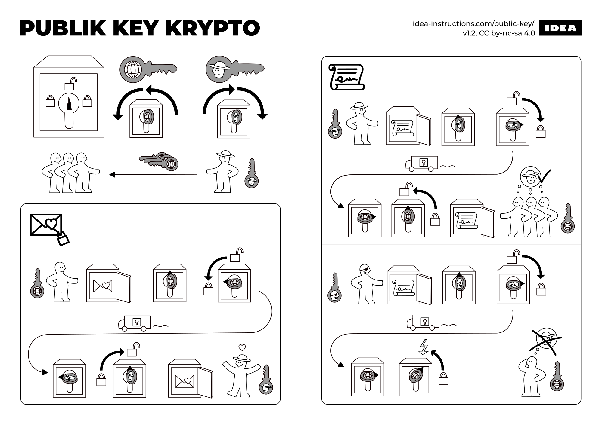
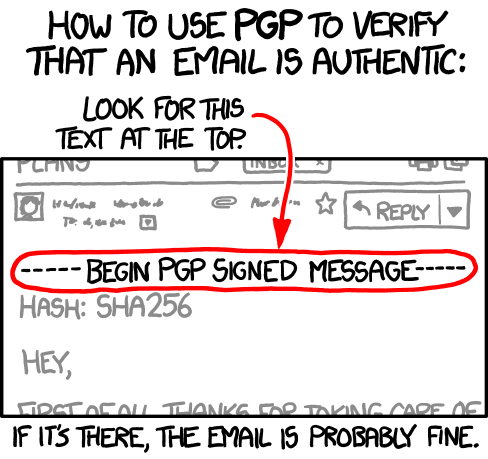

GnuPG 실전편
2013년 미국정보기관 전직원인 에드워드 스노든이 폭로한 감시 실태는 충격적이었다. 미국 국가안보국(NSA)은 다른 나라 정보기관과 협조하여 전세계 인터넷 트래픽을 감시하고 통신내역을 수집하고 있었다. “모든 것을 수집하라”(collect it all)는 것이 그들의 모토였으며 디지털 기술은 그런 욕망을 뒷받침할 수 있는 능력이 있다.
— 4장. 반감시와 통신비밀의 보호. 정보인권의 이해, 진보네트워크센터
민간인 사찰과 감시, 해킹과 개인 정보 유출 등, 디지털 공간 상에서의 프라이버시 침해는 디지털 세계의 발전과 함께 현실 속 위협과 공포로 다가왔습니다. 2016년에는 "공공의 안전"을 이유로 한 테러방지법이 국가 권력 남용과 감시에 대한 우려와 함께, 국회 본회의를 통과하는 사건이 있었습니다. 국가에 의한 검열과 자국민 감시는 세계적으로 수많은 국가에서 자행되고 있으며, 언론의 자유와 민주주의적 가치를 훼손하는 수단으로 동작하고 있습니다. 이러한 체제 하에서, 개인이 스스로의 안전과 자유를 보호하는 목적으로 사용할 수 있는 도구들이 프라이버시에 관한 논의 이래 꾸준히 개발되어 왔습니다. 이 노트에서는 그러한 도구 중 하나인 GnuPG를 실생활에 적용하여 활용하는 방법을 다룰 것입니다.
주의사항
- 이 페이지에 게시된 내용을 시도하여 발생하는 모든 법률적 문제와 사건사고에 대해 필자는 어떠한 책임도 지지 않습니다.
- 이 페이지의 내용은 스스로의 안전과 자유의 보호 이외의 목적을 상정하고 쓰여지지 않았음을 재차 강조합니다.
- 필자는 암호학을 전공하는 전문가가 아닙니다. 절대로 이 노트에 쓰여진 필자의 견해를 전문가의 의견으로 받아들이지도, 인용하지도 마세요.
- 절대적으로 안전한 암호 알고리즘은 존재하지 않음에 유의하세요.
- 현역으로 사용되고 있는 암호 알고리즘에도 크고 작은 결함이 존재할 수 있습니다.
- 기술 발전에 의해 기존의 암호 체계가 무력화될 가능성도 존재합니다.
- 우연에 의해 암호가 밝혀질 가능성도 아주 적게나마 존재합니다.
- OpenPGP조차도 결함이 존재하지 않는다고 단정할 수 없으며, 안전성에 대해서도 암호학자들의 여러 의견이 존재합니다. 경우에 따라서는 OpenPGP가 권장되지 않을 수도 있습니다.
- OpenPGP 이외에도 스스로의 안전과 자유를 보호할 수 있는 다양한 솔루션이 존재합니다. 어느 솔루션을 선택해야 할 지에 대해서는 우선적으로 관련 전문가의 의견에 따르세요.
- 안전한 암호를 사용하고, 주기적으로 암호를 변경하세요.
- 충분한 시간이 주어진다면 Brute-force 공격 앞에서 암호는 무력화되고 맙니다. 해결책은 충분히 긴 암호를 사용하고, 자주 암호를 변경하는 것 밖에 없습니다.
- 가능한 한 임의의 암호를 사용하세요.
- 개인의 신상정보(주소, 생일, 성명, 개인 식별 번호, 가족의 정보 등...)을 이용한 암호는 유추하기 매우 쉽습니다.
- 절대로 타인에게 암호키를 건네주지 마세요.
- 아는 사람이라고 하더라도 암호키를 알려 주어서는 안 됩니다.
- 모르는 사람이라면 더더욱 알려 주어서는 안 됩니다.
- 주변 환경에서 감청, 감시가 일어나고 있는지 항상 확인하세요.
- 사용하는 기기에 스파이웨어가 설치되어 있지 않도록 주의하세요.
- 주변에 감청, 감시 도구(CCTV, 도청기, 소형 카메라 등)나 감시원으로 추정되는 인원이 있는지 확인하세요.
- 소프트웨어의 취약점을 노린 공격을 방지하기 위해 항상 최신 버전을 유지하세요.
- 암호를 저장하는 장치로써 스마트카드(OpenPGP 카드)와 Yubico, Nitrokey 등을 적극 활용하세요.
- 이 노트에서는 macOS의 사용법을 중점적으로 다루고 있습니다. 타 OS에서는 설정, 조작 방법, 동작 상의 미묘한 차이가 존재할 수 있습니다. 또한 이 노트에서 다루는 실습의 많은 부분은 간단하게나마 *nix계 OS의 터미널을 이용하는 방법을 숙지하고 있다는 전제하에 작성되었습니다.
GnuPG란 무엇인가
GnuPG는 공개키 암호화 기법(혹은 비대칭키 암호화 기법)을 이용하여 암호화, 복호화를 구현하는 소프트웨어 중 하나입니다. GnuPG를 통해 자신만의 개인키와 공개키를 생성, 공개키를 배포하여 안전한 통신환경을 구축할 수 있습니다.
공개키 암호화란
공개키 암호화 기법이라는 용어는 다소 생소할 수 있다고 생각합니다. 이 노트는 공개키 암호화 기법에 대한 매우 간략한 설명만을 담고 있습니다. 공개키 암호화 기법에 관하여 조금 더 자세한 내용을 알고 싶으신 분들은 한국어 위키피디아 (혹은 영어 위키피디아)를 참고하여 주세요.
암호화는 간단히 말해, 지정한 사람 이외의 다른 사람들이 알아볼 수 없도록, 어떠한 내용을 변형하는 것입니다. 하지만 암호화한 사람 자신조차도 암호화한 내용을 다시 읽을 수 없다면 암호화의 목적을 달성할 수 없으므로, 암호화한 내용을 원상복구시킬 수 있는 방법을 만들어 내야 합니다. 따라서 원래의 상태로 되돌릴 수 있는 일종의 '단서'를 만들어, 지정한 사람들끼리만 알고 있는 방법을 택하게 됩니다. 이 때, 원래의 상태로 내용을 되돌리는 작업을 복호화, 복호화에 쓰이는 단서를 키(key, 열쇠)라고 합니다.
초기에 사용된 암호화와 복호화 방식은 같은 키(다르더라도 서로를 유추할 수 있는 키)를 공유했습니다. 예를 들어, 숫자 '342'를 '13만큼 더하기'라는 '키'로 암호화하면, '355'라는 결과가 나옵니다. 키를 알지 못하는 일반 사람들은 이것이 '342'를 암호화하여 나온 결과라는 사실을 알 수 없습니다. 하지만 이미 '13만큼 더하기'라는 키를 알고 있는 일부 사람들은 '13만큼 빼기'라는 복호화 키를 이용하여 '355'의 원래 내용을 알아 낼 수 있습니다. 이런 방법으로 자신들만의 비밀 대화를 주고 받을 수 있는 식이지요.
이를 대칭키 방식이라고 합니다. 이런 방식은 치명적인 약점을 갖고 있습니다. 위에서 알 수 있듯이, 암호화에 쓰이는 키인 '13만큼 더하기'와 복호화에 쓰이는 키인 '13만큼 빼기'는, 둘 중 하나를 안다면 나머지 하나를 쉽게 유추할 수 있기 때문입니다. 암호가 적절하게 사용되기 위해서는 반드시 사람과 사람간에 키가 전달되어야 합니다. 하지만 누군가가 키를 전달하는 대화를 엿듣는다면? 어딘가에 적어논 키를 누가 훔쳐간다면? 심지어는 중간에 키가 새어나갔다는 사실조차 알아채지 못한다면? 아주 큰 문제가 발생합니다. 의도하지 않은 사람이 암호화된 내용을 훔친 키로 복호화해서 원래의 내용을 알아볼 수 있게 됩니다. 키를 바꾸기 전까지 사용된 모든 암호는 무용지물이 되고 마는 것입니다.
이러한 문제를 해결하기 위해 비대칭키 방식이 등장했습니다. 비대칭키 방식에서는 암호화에 쓰이는 키와 복호화에 쓰이는 키로, 서로 다른 키를 사용합니다. 서로 다르기만 할까요? 중요한 것은 두 키중 하나를 다른 사람이 알게 되어도, 나머지 키 하나를 (사실상) 유추할 수 없다는 것입니다. 구체적으로는,
- 암호화에 쓰이는 키를 (받는 이의) 공개키라고 한다.
- 복호화에 쓰이는 키를 (받는 이의) 개인키라고 한다.
- 개인키와 공개키 중 하나만을 알 수 있을 때, 이로부터 나머지 하나를 유추할 수 없다.
- 보내는 이는 (받는 이의) 공개키로 내용을 암호화하여 받는 이에게 보낸다.
- 받는 이는 보내는 이가 보낸 (받는 이의) 공개키로 암호화된 내용을 (받는 이의) 개인키로 복호화하여 내용을 확인한다.
- (보내는 이가) (받는 이의) 공개키로 암호화 한 내용은 (받는 이가) (받는 이의) 개인키로만 복호화할 수 있다.
이라는 것입니다. 이 방법의 장점은 받는 이가 자신의 개인키만 소중히 보관하면 공개키는 어디에 두어도 큰 문제가 되지 않는 것입니다. 바로 전의 예제로 돌아가 봅시다. 대칭키 방식을 사용한다면, 누군가가 키를 엿듣거나 훔쳐가면 암호가 무력화되었지만, 비대칭키 방식을 사용한다면, 거리에서 큰 소리로 공개키를 외치고 다녀도 상관이 없습니다. 인터넷에 업로드해도 상관이 없습니다. 아니, 오히려 권장되기도 합니다. 실제로 사람들은 공개키를 자신의 홈페이지를 비롯한 인터넷 웹사이트에 올리기도 합니다. (이에 대해서는 아래쪽 섹션을 참조) 아무리 공개키가 퍼져도 개인키를 알아내는 것은 불가능하니까요.
비대칭키 방식을 사용하면, 키를 안전하게 전달할 수 있는 동시에, 많은 사람들에게 효율적으로 키를 전달할 수 있습니다. 위에서처럼 인터넷에 공개키를 올리면, 공개키의 주인에게 연락을 취하고 싶은 누군가가 그것을 보고 공개키를 다운로드 받아, 암호화한 내용을 공개키의 주인에게 보낼 수 있습니다.

🔼"PUBLIK KEY KRYPTO", v1.2, CC by-nc-sa 4.0.
비대칭키 방식을 활용하는 또 한가지의 방법은 바로 디지털 서명입니다. 암호화와 복호화는 결국, 주어진 내용에 주어진 키를 적용한다는 점에서 같은 작업이라는 것을 알 수 있습니다. 그렇다면 개인키로 어떤 내용을 암호화하는 것도 가능할까요? 가능합니다! 우리는 이러한 암호화를 '서명'이라고 부릅니다. 공개키로 암호화한 내용은 개인키로만 복호화할 수 있듯이, 개인키로 암호화(서명)한 내용은 대응하는 공개키만으로 복호화할 수 있습니다. 이러한 복호화를 우리는 '검증'이라고 부릅니다.
서명과 검증을 어떤 상황에서 사용할 수 있을까요? 어떤 소프트웨어 개발자가 자신이 개발한 소프트웨어를 배포하려하는 상황을 가정합시다. 개발자는 자신이 개발한 소프트웨어를 그 누구에 의해서도 수정되어지지 않은 상태로 배포하길 원합니다. 몰래 소프트웨어에 멀웨어나 스파이웨어를 심어 다시 배포하는 나쁜 사람들이 세상에는 얼마든지 존재하기 때문이죠. 하지만 소프트웨어를 이용하기 위해 다운로드받으려는 사람은 어느 곳에서 다운로드 한 소프트웨어가 원본 소프트웨어인지, 수정된 소프트웨어인지 알 수 있는 방법이 없습니다. 개발자가 '서명'을 하지 않았다면 말이죠. 만약 개발자가 자신의 개인키로 '서명'을 했다면, 다운로드 한 사람은 개발자의 공개키를 이용하여 '검증'을 할 수 있을 것입니다. 만약에 개발자가 아닌 사람이 별도의 개인키로 서명을 했다면, 개발자의 공개키로 검증하는 것은 불가능하므로, 그것이 수정된 소프트웨어임을 알 수 있습니다.
따라서 이러한 기능의 장점덕에 현재까지도 비대칭키 방식은 널리 쓰이고 있습니다. GnuPG는 비대칭키 방식 이외에도 다양한 암호화 알고리즘을 제공하지만, 그중에서도 비대칭키 방식의 암호화 알고리즘은 다음 3가지입니다.
- RSA: 소인수분해와 관련
- ElGamal: 이산로그와 관련
- DSA: 역시 이산로그와 관련
위 3가지 알고리즘 모두 수학적으로 흥미로운 주제와 연관되어 있기 때문에 차후에 수학 카테고리의 노트에서 다루게 될 것입니다. 하지만 이 노트의 목적은 빠르게 GnuPG를 사용하는 방법에 대해 알아보는 것이므로 여기서는 잠깐 생략하도록 하겠습니다.
GnuPG 설치하기
대부분의 Linux 배포판은 각자의 저장소에서 GnuPG를 다운로드하여 설치할 수 있도록 하고 있습니다. Debian 계열의 배포판이라면 apt-get을, Arch Linux라면 pacman을, Red Hat과 Fedora라면 yum을 통해 GnuPG를 설치할 수 있습니다.
macOS를 사용중이라면 Homebrew를 통해 GnuPG를 설치할 수 있습니다.
brew install gnupg
추가적으로 GnuPG를 GUI 상에서도 활용할 수 있도록 확장 기능이 담긴 패키지인 pinentry-mac을 같이 설치할 수 있습니다.
brew install pinentry-mac
설치 후에는 ~/.gnupg/gpg-agent.conf 파일의 마지막 줄에 pinentry-program /usr/local/bin/pinentry-mac를 추가한 뒤, gpg-agent를 잠시동안만 kill 해 주면 정상적으로 GUI 기능을 사용할 수 있습니다.
echo "pinentry-program /usr/local/bin/pinentry-mac" >> ~/.gnupg/gpg-agent.conf
killall gpg-agent
Windows에서는 GnuPG의 Windows 버전인 GPG4Win을 설치하여 GnuPG의 기능을 사용할 수 있습니다.
OpenPGP 키 구하기
방금 설치한 GnuPG를 활용하기 위해, 공개키를 구하여 암호화한 내용을 이메일로 보내 보고자 합니다. 그렇다면 이메일을 보낼 상대가 사용하는 공개키는 어디에서 구할 수 있을까요? 상대방의 홈페이지에 상대방이 올려놓은 공개키를 다운로드하거나, 이메일로 사정을 설명하고 공개키를 보내달라고 요청할 수도 있습니다. 하지만 GPG(를 비롯한 OpenPGP 소프트웨어) 사용자들은 보통 '키 서버'라는 곳에 자신의 키를 업로드합니다. 그리고 공개키가 필요할 때마다, 키 서버에서 공개키를 다운로드할 수 있습니다.
'키 서버'에 키를 업로드하면 일일이 상대방의 홈페이지를 찾아가거나 이메일로 공개키를 달라고 요청하는 번거로움이 없다는 장점이 있습니다. 아래에서는 키 서버 중 하나인 keys.openpgp.org 을 예시로 들었지만, 어느 신뢰할 수 있는 키 서버를 발견했다면, 그 서버를 사용하여도 됩니다.
keys.openpgp.org
keys.openpgp.org에서는 사용자들이 업로드한 키를 다운로드하여 사용할 수 있습니다. 메인 페이지에 접속하여 이메일 주소, 혹은 키 ID, Fingerprint (아래에서 설명)을 입력하면 키 서버에 등록된 키를 바로 다운로드할 수 있습니다.
Keybase
Keybase 또한 키 서버와 비슷한 역할을 하는 사이트입니다. 후술할 사용 방법은 일반적인 키 서버의 사용 방법과 조금 다르지만, Twitter나 GitHub와 연동하여 인증의 신뢰성을 높이는 것을 비롯한 여러 기능을 제공합니다. 이를 이용하여, 친구의 Twitter나 GitHub ID를 검색하는 것 만으로 공개키를 찾을 수 있습니다.
GnuPG 본격적으로 사용하기
다른 어플리케이션과 마찬가지로, GnuPG 또한 터미널 명령줄에서 man gpg를 입력하면 상세한 사용법을 읽을 수 있습니다. 하지만 익숙하지 않은 사람이 매뉴얼을 전부 읽고 그대로 사용하기에는 너무 길기 때문에, 꼭 알고 활용하여야 하는 기능 몇가지를 뽑아 이 글을 작성하였습니다. 어느정도 사용법이 익숙해지고, 더 자세한 내용이 알고 싶다면 man 페이지 혹은 공식 문서를 참고하기를 바랍니다.
키 생성하기
내가 상대방에게 보내는 메일을 암호화하려면 상대방의 공개키가 필요하지만, 상대방이 나에게 보내는 메일을 암호화하려면 나 자신의 공개키가 필요합니다. 이를 위해서는 오직 나만을 위한 공개키와 개인키 한 쌍을 생성해 줄 필요가 있습니다.
터미널에 다음 명령어를 입력하여 키를 생성해 줍시다.
gpg --full-generate-key
명령어를 입력하면, 번호를 입력하여 키의 종류와 알고리즘을 선택할 수 있게 됩니다.
Please select what kind of key you want:
(1) RSA and RSA (default)
(2) DSA and Elgamal
(3) DSA (sign only)
(4) RSA (sign only)
(14) Existing key from card
Your selection?
알고리즘을 선택했다면, 이제는 키의 길이를 정해야 합니다. 키의 길이가 길수록 키의 안전성이 높아지는 동시에 요구하는 성능이 커집니다. 자신이 사용하는 환경과 필요에 맞추어 길이를 선택하면 됩니다.
RSA keys may be between 1024 and 4096 bits long.
What keysize do you want? (2048)
GnuPG에서는 음식에 유통기한을 지정하듯, 키의 유효기간을 지정할 수 있습니다. 기본값은 유효기간을 별도로 지정하지 않는 0이지만, 보통은 2년 이하의 유효기간을 설정하는 것이 권장되고 있습니다. 유효기간은 나중에 연장할 수 있습니다.
Please specify how long the key should be valid.
0 = key does not expire
<n> = key expires in n days
<n>w = key expires in n weeks
<n>m = key expires in n months
<n>y = key expires in n years
Key is valid for? (0)
유효기간까지 설정했다면, 이름, 이메일 주소, 코멘트를 입력합니다.
Real name: Example Name
Email address: name@example.com
Comment: Example Keys!
You selected this USER-ID:
"Example Name (Example Keys!) <name@example.com>"
Change (N)ame, (C)omment, (E)mail or (O)kay/(Q)uit?
입력을 마쳤다면, 비밀번호를 설정하는 화면이 나타날 것입니다. 적절하게 길고, 유추하기 힘든 비밀번호를 설정하세요. 비밀번호까지 설정을 마쳤다면, GnuPG는 적절하게 난수를 생성하여 공개키와 개인키를 생성할 것입니다. 참고로, 난수를 생성하는 도중에 키보드 타이핑을 하거나, 마우스 커서를 움직이면, GnuPG가 난수 생성에 필요한 충분한 엔트로피를 얻을 수 있도록 보조할 수 있습니다.
pub rsa2048 2020-04-30 [SC] [expires: 2022-04-30]
0EE79B849694677F48C44B0D23B93F3D5157EA22
uid Example Name (Example Keys!) <name@example.com>
sub rsa2048 2020-04-30 [E] [expires: 2022-04-30]
생성된 개인키를 비롯하여, 여러가지 중요한 파일들은 ~/.gnupg에 저장됩니다. 파일을 도난당하거나 잃어버리지 않도록 소중히 보관하세요.
키 목록 보기
이제 GnuPG에 등록된 키들의 목록을 확인해 볼까요? 방금 생성한 개인키/공개키가 정상적으로 생성되었다면, 목록에서 확인할 수 있어야 합니다. 우선 공개키를 확인합시다. 저장된 공개키들의 목록을 확인하려면 gpg에 옵션 -k, 혹은 --list-keys를 붙여 실행하면 됩니다.
gpg -k
다음과 같은 결과를 확인할 수 있습니다.
pub rsa2048 2020-04-30 [SC] [expires: 2022-04-30]
0EE79B849694677F48C44B0D23B93F3D5157EA22
uid [ultimate] Example Name (Example Keys!) <name@example.com>
sub rsa2048 2020-04-30 [E] [expires: 2022-04-30]
이번에는 개인키들의 목록을 확인합시다. 개인키 목록을 확인하기 위해서는 옵션 -K (대문자임에 주의!), 혹은 --list-secret-keys를 붙여서 실행하면 됩니다.
gpg -K
공개키 목록과 비슷한 결과를 확인하게 될 것입니다.
sec rsa2048 2020-04-30 [SC] [expires: 2022-04-30]
0EE79B849694677F48C44B0D23B93F3D5157EA22
uid [ultimate] Example Name (Example Keys!) <name@example.com>
ssb rsa2048 2020-04-30 [E] [expires: 2022-04-30]
이제 이 목록들을 간단하게 읽는 방법을 알아봅시다.
- 목록에서 한 항목은
pub,sub,sec,ssb으로 시작합니다.- 각각 '공개키', '(공개키의) 보조키', '개인키', '(개인키의) 보조키'를 의미합니다.
- 여기서 '보조키'란, 특정한 역할을 분담하는 키를 의미합니다. 위의 설명에서는 하나의 키가 암호화와 서명을 모두 처리할 수 있다고 했지만, 실제로는 여러가지 이유에 의해, GnuPG를 비롯한 OpenPGP 어플리케이션들은 암호화의 역할을 맡는 키와 서명의 역할을 맡는 키를 나누어서 관리합니다.
- 하나의 키에는, 하나의 메인 키가 쌍으로(공개키와 개인키)가 존재하고, 보조키도 쌍으로 존재하지만, 메인 키와는 다르게 보조키는 복수 존재할 수 있습니다.
rsa2048은 키에 사용된 알고리즘과 키의 길이를 나타냅니다. 즉, 이 키는 RSA 알고리즘을 사용하였으며, 키의 길이는 2048비트임을 알 수 있습니다.2020-04-30은 키를 생성한 날짜입니다.[SC]와[E]는 메인 키 혹은 보조키가 담당하는 역할을 나타냅니다.S는 서명(sign)/검증 기능을 담당한다는 의미입니다.E는 암호화(encrypt)/복호화 기능을 담당한다는 의미입니다.C는 인증서 발급 기능(certify)을 담당한다는 의미입니다. 모든 메인 키에는C가 표시되어 있어야 합니다. 구체적으로는,- 보조키를 만들 수 있도록 합니다.
- 다른 키를 서명할 수 있도록 합니다. 뒤의 섹션에서 자세히 다룹니다.
- 해지 인증서(revocation certificate)을 발급할 수 있도록 합니다.
A는 인증(authenticate)을 담당한다는 의미합니다.C와 혼동될 수도 있지만, 이는 TLS나 SSH의 인증키로 사용할 수 있음을 의미합니다. 실전편에서는 다루지 않고, 별도의 노트에서 다룰 것입니다.- 즉 메인 키는 서명과 인증을, 보조키는 암호화 기능을 담당하고 있음을 알 수 있습니다.
[expires: 2020-04-30]은 키가 유효기간을 지나, 무효화되는 날짜입니다.0EE79B849694677F48C44B0D23B93F3D5157EA22와 같은 40자리의 16진수(즉 160비트)는 이 키의 Fingerprint입니다.- Fingerprint는 키의 정보를 바탕으로 한 Hash 값으로, 다른 키로부터 이 키를 식별하는 고유번호입니다.
- 짧게 사용하기 위해 마지막 16자리, 혹은 8자리만을 사용하는 경우도 있습니다.
- 메인 키 쌍과 보조키 쌍은 각자의 Fingerprint를 가지며, 보조키를 포함한 전체 키 쌍의 Fingerprint는 메인 키의 Fingerprint를 따릅니다.
uid다음의[ultimate]은 이 키를 얼마나 신뢰할 수 있을 지를 나타내는 척도인 유효성(validity)입니다.- 경우에 따라
[ultimate],[full],[marginal],[never]혹은[unknown]으로 표시됩니다. - GnuPG 사용에 있어서 '키'에 대한 신뢰와 '키의 주인'에 대한 신뢰는 미묘하게 다릅니다. 전자의 척도는 유효성(validity), 후자에 대한 척도는 신뢰성(trust)으로 구분됩니다. 두 척도 모두 Trust Values라는 형식으로 나타내어지며, 구체적으로는, 키가 올바르게 서명되었는지, 그 키를 서명한 키의 '신뢰성'은 어느 정도인지에 따라서 '유효성'을 계산하는 시스템입니다.
- 🤯 너무 복잡한가요? 이에 대해서는 "키 서명하기" 섹션에서 더 자세하고 알기 쉽게 다룰 것입니다.
- 경우에 따라
참고로, 위에서 출력하도록 한 목록에서는 보조키의 Fingerprint가 표시되지 않지만, --fingerprint --fingerprint 옵션을 추가하면 보조키의 Fingerprint도 확인할 수 있습니다. 또한, --keyid-format [키 ID 표시형식] 옵션을 붙이면, 주어진 형식대로 Fingerprint를 표시할 수 있습니다. [키 ID 표시형식]에 관한 자세한 내용은 man gpg를 참고하세요!
키 불러오기/내보내기
이제 앞에서 다운로드해 두었던 공개키를 사용할 수 있도록 공개키 파일을 GnuPG로 불러올 것입니다. 공개키를 한번 불러오면 키링(키를 저장하는 장소)에 저장되기 때문에, 계속 편리하게 사용할 수 있습니다. [불러올 파일]에 다운로드한 공개키 파일의 이름을 넣어서 다음 명령어를 실행하면, GnuPG로 공개키를 불러올 수 있습니다.
gpg --import [불러올 파일]
정상적으로 불러왔다는 메세지가 출력되는 것을 볼 수 있습니다.
gpg: key 23B93F3D5157EA22: public key "Example Name (Example Keys!) <name@example.com>" imported
gpg: Total number processed: 1
gpg: imported: 1
반대로, 나 자신의 공개키, 혹은 내가 갖고 있는 타인의 공개키를 내보내는 것도 가능합니다. 이 때는, 명령어를 입력할 때, 어떤 키를 내보낼 것인지를 명시해 주어야 합니다. 키를 명시할 때 사용할 수 있는 [키 ID]로는 이메일 주소와 Fingerprint, 짧은 키 ID(Fingerprint의 마지막 8자리), 긴 키 ID(Fingerprint의 마지막 16자리)가 있습니다. 다음 명령어를 통해 공개키를 내보내어 [내보낸 파일]에 저장할 수 있습니다.
gpg --output [내보낸 파일] --export [키 ID]
터미널에서 표준 스트림을 자유자재로 다룰 수 있다면 --output pub_key.asc를 쓰지 않고 그대로 STDOUT으로 출력 내용을 내보내어 활용할 수도 있습니다. 다만 이 경우, 출력은 인코딩되지 않은 바이너리 데이터 그대로의 상태이므로, 사람이 읽거나, 텍스트 내에 첨부하기에는 부적절합니다. 조금 더 사람이 읽기에 간편한 형태로 내보내려면 --armor 옵션을 --export옵션에 붙여야 합니다. 따라서, STDOUT으로 인코딩된 문자열 형태로 키를 내보내는 명령어는 다음과 같습니다.
gpg --armor --export [키 ID]
인코딩과 관련하여 --armor 옵션은 앞으로 설명할 암호화, 서명 기능에 대해서도 동일하게 작동됩니다. 옵션을 붙이지 않으면 인코딩되지 않은 상태로, 옵션을 붙이면 인코딩된 상태로 출력됩니다.
개인키를 불러오고 내보내는 것도 크게 다르지 않습니다. 개인키를 불러오는 경우에는 공개키와 동일하게 gpg --import 명령어를 사용하면 됩니다. 다만, 개인키를 내보내는 경우는 gpg --export 명령어 대신 gpg --export-secret-keys 명령어를 사용하여야 합니다. 혹시라도 실수로 개인키를 내보내어 버리면 큰일이니까요.
키 서버 사용하기
위에서 언급했듯이, GnuPG에서 직접 키 서버에 접속하여 키를 불러오고 사용하는 것이 가능합니다. 이 섹션에서는 키 서버로 keys.openpgp.org를 사용하도록 하겠습니다. 우선, GnuPG에서 이 키 서버를 사용하도록 하려면 keyserver hkps://keys.openpgp.org를 ~/.gnupg/gpg.conf에 추가하면 됩니다.
echo "keyserver hkps://keys.openpgp.org" >> ~/.gnupg/gpg.conf
불러올 키의 ID를 입력하여 다음 명령을 실행하면, 자동으로 키를 받아올 수 있습니다.
gpg --auto-key-locate keyserver --locate-keys [키 ID]
혹은 다음 명령을 실행하여도 됩니다.
gpg --recv-keys [키 ID]
키 서버에 업로드된 키는 가끔씩 업데이트 되기도 합니다. 이를테면 보조키를 추가했다던가, 일부 키를 해지(revoke)하여 해지 인증서가 업로드된 경우입니다. 이런 경우에는 다음 명령을 실행하면 최신의 키 데이터를 받아 올 수 있습니다.
gpg --refresh-keys
반대로 나의 키를 공유하기 위해 키 서버로 키를 업로드하는 경우도 생각해 볼 수 있습니다.
- 이 경우에는 나의 키가 외부에 공개되는 것이므로 신중하게 작업하여야 합니다.
- 물론 자신의 공개키가 노출되는 것에는 아무런 문제가 없지만, 키의 일부 정보는 나에 관한 민감한 정보를 포함하고 있을 수 있습니다.
- 학교나 회사의 이메일 주소를 사용하면 신분이 밝혀질 수도 있고, 코멘트에 적어놓은 내용이 다른 문제의 원인이 될 수 있습니다.
- 게다가, 키를 사용할 수 없게 된 경우에 해지 인증서를 업로드하는 것은 가능하지만, 이는 키 서버에서 키를 삭제하는 것과는 다릅니다. 키 서버에 따라서는 업로드한 키를 키 서버에서 삭제하는 것이 곤란한 경우가 있을 수도 있습니다.
- 키 서버끼리 키 정보를 공유하여 확산시키기도 하기 때문에, 자칫하면 되돌릴 수 없는 결과를 낳을 수도 있습니다.
- 물론 자신의 공개키가 노출되는 것에는 아무런 문제가 없지만, 키의 일부 정보는 나에 관한 민감한 정보를 포함하고 있을 수 있습니다.
그러므로, 키를 전송하기 전에는 전송하려는 키를 다시 한번 점검하기 바랍니다. 다음 명령을 실행하면 설정해 둔 서버로 키를 업로드할 수 있습니다.
gpg --send-keys [키 ID]
keys.openpgp.org의 경우에는 대다수의 다른 키 서버들과는 달리 이메일 인증을 필요로 합니다. 다음 명령어를 통해 키를 내보내어 서버에 업로드한 뒤, 인증 페이지의 링크를 받아 올 수 있습니다. (curl이 설치되어 있어야 합니다.)
gpg --export [키 ID] | curl -T - https://keys.openpgp.org
[키 ID]등의 [키 정보]로 키를 검색할 경우에는, 다음 명령을 사용하면 됩니다.
gpg --search-keys [키 정보]
이외에도, 별도로 지정한 [키 서버]을 이용할 경우에는, 위 명령에 --keyserver [키 서버] 옵션을 앞에 붙여서 이용할 수 있습니다. [키 서버]에는 :// 뒤의 키 서버 주소를 입력하면 됩니다.
암호화/복호화
드디어 암호화와 복호화입니다. 어떤 파일을 암호화하려면, 암호화에 사용할 공개키를 명시해야 합니다. 공개키의 주인은 위에서 언급한 [키 ID] 중 하나를 통해 제시하면 됩니다. 다음 명령을 실행하면 [키 ID]에 해당하는 공개키로 [파일]을 암호화한 결과를, 바이너리 데이터 형태로 [파일].gpg 파일에 저장할 것입니다.
gpg --encrypt --recipient [키 ID] [파일]
만약에 [파일]이 생략되었다면 STDIN을 입력으로 받고, 출력또한 STDOUT으로 내보내어질 것입니다. 바이너리 데이터가 아닌, 인코딩된 결과를 얻고 싶다면, --encrypt 옵션 앞에 --armor 옵션을 넣어주면 됩니다. 또한 출력파일의 이름을 [파일].gpg 이외의 것으로 설정하고 싶다면 --output [저장할 파일명] 옵션을 맨 앞의 옵션으로 넣어주면 됩니다. (물론 터미널의 리다이렉션 기능을 이용하여도 됩니다.)
이번에는 암호화된 파일을 복호화해 볼 것입니다. 당연히 암호화된 파일은 내가 개인키를 갖고 있는 키의 공개키로 암호화되어 있어야 복호화 할 수 있겠죠? 다음 명령을 사용하면 개인키를 별도로 지정해 주지 않아도, 자동으로 키를 인식하여 암호화된 [파일]을 복호화한 뒤, STDOUT으로 복호화한 내용을 출력할 것입니다.
gpg --decrypt [파일]
역시 [파일]이 생략되었다면 자동으로 STDIN을 입력으로 받을 것입니다. 출력된 내용을 [저장할 파일명]을 지정하여 저장하려면, 암호화할 때처럼 --output [저장할 파일명] 옵션을 앞에 넣어서 명령을 실행하면 됩니다.
서명/검증
서명과 검증 역시 크게 어렵지 않습니다. 다만, GnuPG는 3가지 형태로 서명 기능을 제공합니다. 그 3가지는 다음과 같습니다.
--sign: 가장 단순한 형태입니다. 입력을 받아 개인키로 서명한 내용을 출력합니다. 암호화와 본질적으로 같은 종류의 작업이므로, 출력에는 원본의 내용이 남아있지 않습니다. 공개키를 이용하여 검증(즉, 복호화)하기 전까지는 내용을 확인할 수 없습니다.--detach-sign: 주어진 파일을 서명하되, 원본파일의 내용을 바꾸지 않습니다. 대신 별도의 서명 파일이 결과물로 나오게 됩니다. 파일을 배포할 때에는, 파일 원본과 제공된 서명 파일을 이용하여 검증할 수 있도록, 서명 파일도 같이 업로드 해야 합니다.--sign과는 다르게 원본의 내용을 먼저 확인하고 나중에 내용을 검증할 수 있습니다. 또한 서명을 검증하는 과정에서 원본 파일에 예상치 못한 손상을 입는 것을 방지할 수 있습니다.--clearsign: 문자열로 읽어들일 수 있는 파일을 입력으로 받아, 파일 원본에 ASCII 인코딩으로 인코딩한 서명을 덧붙여 출력합니다. 출력한 내용은 이메일이나 블로그 포스트 등에서 사용할 수 있습니다.detach-sign과 마찬가지로 검증하기 전에 미리 내용을 확인할 수 있습니다.
--sign은 다음과 같은 명령을 통해 실행합니다. 암호화와 동일하게, --armor 옵션을 붙이면 인코딩된 결과를 얻을 수 있고, --output [저장할 파일명] 을 지정하면 출력을 저장할 파일을 지정할 수 있습니다. [파일]이 지정된 경우에는 [파일].gpg로 출력이 저장되고, [파일]이 지정되지 않으면 STDOUT으로 출력을 내보내는 것 역시 암호화와 같습니다.

🔼"PGP", CC by-nc 2.5.
gpg --sign [파일]
[파일]이나 STDIN으로 서명하고자 하는 내용을 입력하여 --detach-sign을 실행하면, [파일]이 주어진 경우에는 [파일].sig로 서명 파일이 저장되고, STDIN으로 입력된 내용의 결과물은 STDOUT으로 출력될 것입니다. 동일하게 --armor 옵션과 --output [저장할 파일명] 옵션을 사용할 수 있습니다.
gpg --detach-sign [파일]
--clearsign으로 서명하면, [파일]을 입력으로 한 결과물은 [파일].asc으로, STDIN으로 입력된 내용의 결과물은 STDOUT으로 출력될 것입니다. --clearsign의 경우, 기본적으로 서명이 인코딩된 상태로 원본 아래에 첨부되므로, 별도로 --armor 옵션을 지정할 필요는 없습니다. --output [저장할 파일명] 옵션은 동일하게 사용할 수 있습니다.
gpg --clearsign [파일]
--sign과 -clearsign으로 서명된 [파일]을 검증하는 경우, 다음 명령어를 실행하면 됩니다. 물론 서명한 키의 공개키를 이미 불러온 상태여야 합니다.
gpg --verify [파일]
--detach-sign으로 서명된 [서명 파일]과 [원본 파일]이 주어진 경우에는, 다음 명령어를 실행하여 파일을 검증할 수 있습니다.
gpg --verify [서명 파일] [원본 파일]
검증이 정상적으로 완료되었다면, 다음과 비슷한 메세지가 출력될 것입니다.
gpg: Signature made Fri May 1 02:57:22 2020 KST
gpg: using RSA key [Fingerprint]
gpg: Good signature from "[이름] ([코멘트]) <[이메일]>" [유효성]
키 해지 인증서 발급/사용하기
GnuPG를 사용하다보면, 해킹을 비롯한 사건사고에 의해 키를 도난당하는 사건이 발생할 수도 있습니다. 이런 일이 발생할 확률이 결코 낮지 않은 실상입니다. 대한민국에서 (반강제적으로) 널리 사용되는 공인인증서또한 GnuPG와 원리적으로 비슷하게 작동하지만, 공인인증서에 관련한 해킹사고는 비일비재하게 일어납니다. GnuPG에서 사용되는 OpenPGP도 당연히 도난사고의 대상입니다. 만에 하나 자신의 개인키가 유출된 것을 알게 되었다면, 마치 인감 도장을 잃어버렸을 때처럼 빠르고 신속하게 대처하여야 합니다.
위에서 언급했듯이, 키를 도난당하거나 분실한 경우, 추가적으로 피해가 발생하는 것을 막기 위해서, 키 해지 인증서를 업로드하여 키를 더이상 사용할 수 없게 되었음(compromised)을 알리고, 더이상 나의 공개키를 암호화나 검증에 사용하지 않을 것을 당부하여야 합니다.
[키 ID]를 지정하여, 다음 명령어를 실행하면 해지 인증서 revoke.asc를 생성할 수 있습니다. 키 해지 인증서는 키를 생성한 이후 언제든지 생성할 수도 있습니다. 하지만, 키를 분실하여 아무것도 할 수 없는 상황을 대비하여 미리 인증서를 생성하는 것이 권장됩니다.
gpg --output revoke.asc --gen-revoke [키 ID]
명령을 실행하면, 해지 사유를 선택하는 질문이 나옵니다. 키를 해지하는 상황에 맞게 다음 사유 중 하나를 선택해, 해지 인증서를 생성하면 됩니다.
Please select the reason for the revocation:
0 = No reason specified
1 = Key has been compromised
2 = Key is superseded
3 = Key is no longer used
Q = Cancel
(Probably you want to select 1 here)
Your decision?
발급된 인증서는 개인키와 동일한 수준 이상으로 관리하는 것이 권장됩니다. 해커가 이 인증서를 탈취하면, 당장이라도 개인키 사용을 무력화할 수 있기 때문입니다. 키 해지를 원한다면, 이 인증서 파일 revoke.asc을 gpg --import명령어를 통해 GnuPG로 불러오면 됩니다. 이 상태에서 키를 키 서버에 업로드하면, 키가 정상적으로 해지되었다는 메세지를 받을 수 있습니다.
키 서명하기
알고 있는 다른 사람의 공개키에 나의 개인키로 서명하여, 그 공개키의 신뢰도를 향상시킬 수 있습니다. 이 때, 다른 사람의 공개키를 서명할 경우에는, 키 주인을 직접 만나서 서명하고자 하는 키가 키 주인의 키가 확실하다는 것을 확인한 뒤에 서명을 하는 것이 권장됩니다. 혹시라도 잘못된 키를 서명하고, 그 키를 내가 서명했다는 사실이 밝혀지면, 역으로 나의 키를 신뢰할 수 없다는 의미로 받아들여지기 때문입니다. 보증의 원리와도 비슷합니다. 반드시 나의 이름, 이메일을 걸고 보증한다는 것을 기억하고, 믿을 수 있는 사람의 믿을 수 있는 키에만 서명하세요.
[키 ID]에 서명할 키의 ID를 넣어, 다음 명령을 실행하면, 키를 서명할 수 있습니다.
gpg --sign-key [키 ID]
키를 사인했다면, 서명한 키를 내보내기 한 뒤, 안전한 방법으로 키의 주인에게 전달하세요. 키의 주인은 그 키를 --import하여 자신의 키에 서명을 추가할 수 있습니다.
내가 가지고 있는 공개키가 누구의 서명을 받았는지 확인하고 싶다면, [키 ID]를 입력하여 다음 명령을 실행하면 됩니다.
gpg --check-signatures [키 ID]
키 유효성에 관하여
키 유효성은, "키 목록보기" 섹션에서 언급했듯이, 키를 얼마나 신뢰할 수 있을지를 나타내는 척도입니다. 위 섹션에서 언급했듯이, GnuPG 사용에 있어서 '키'에 대한 신뢰와 '키의 주인'에 대한 신뢰는 미묘하게 다르고, 전자의 척도는 유효성(validity), 후자에 대한 척도는 신뢰성(trust, 혹은 ownertrust)이라고 합니다. 각 키의 신뢰성은, 키를 생성한 키의 주인이 아닌, 그 (공개)키를 받아서 사용하고 있는 나 자신이 매기는 값입니다. 따라서, 신뢰도는 아래 섹션의 "키 정보 수정하기" 기능을 이용하여 키마다 등록하거나 수정할 수 있습니다.
여기서 주의할 점은, 신뢰성을 평가하는 기준은 "키의 주인이 내가 생각하는 주인인게 확실한가"가 아닌, "키의 주인은 올바르게 서명을 하는가"입니다. 만약에 나의 친구가 키를 가지고 있고, 내가 갖고 있는 키가 그 친구의 키인 것이 확실하다면, 나의 서명을 추가하여 그 키 자체의 보편적인 신뢰도를 높일 수 있습니다. 하지만, 그 친구가 서명하는 키들이 의심스럽다면, (내가 친구의 키를 서명했음에도 불구하고) 친구의 키의 신뢰도를 낮추어, 내가 가지고 있는 키들의 유효성을 재평가할 수 있습니다. 이는, 신뢰성이 높은 키로 서명된 키는 신뢰성이 낮은 키로 서명된 키보다 높은 유효성을 가지도록 계산되는 성질을 이용하는 것입니다. 즉, 어떠한 키의 유효성이 높다는 것은 다음을 의미합니다.
- 내가 가지고 있는 공개키를 이용하여 정상적으로 검증되었다.
- 검증에 이용된 공개키의 신뢰성이 높게 평가되었다.
구체적으로는, 유효성과 신뢰성은 Trust Level로 표시되며, 유효성은 신뢰성의 Trust Level에 따라 다음과 같이 계산됩니다.
u,[ultimate]: 스스로 만든 키에만 사용. 무조건적인 신뢰. 신뢰성이[ultimate]인 키로 서명된 키는,[full]의 유효성을 가짐.f,[full]: 신뢰성이[full]인 키의 주인은, 키 서명의 개념을 완벽하게 이해하고 있으며, 그 키의 주인이 서명한 키는 내가 서명한 키와 동일하게 유효하다고 볼 수 있음. 즉, 신뢰성이[full]인 키로 서명된 것이 1개 이상 확인된 키는 유효성[full]을 가짐.m,[marginal]: 신뢰성이[marginal]인 키의 주인은, 어느정도는 믿을 수 있지만, 그가 서명한 모든 키가 유효하다고 판단하기는 어려움. 이 경우, 신뢰성이[marginal]로 표기된 키 3개 이상의 서명이 확인된 경우에만 키의 유효성을[full]로 표시함.[marginal]로 표기된 키 3개 미만의 서명이 확인된 경우는 유효성이[marginal]로 표기됨.-,[unknown]: 키를 불러왔을 때의 기본 상태. 신뢰성이 주어지지 않았고, 유효성이 계산되지 않은 상태.q,[undefined]: 신뢰하지도 신뢰하지도 않는 상태.n,[never]: 절대로 신뢰하지 않음. 어떤 키에 신뢰성이[never]인 키의 서명이 들어있다면, 그 서명은 유효성 계산에서 무시됨.- 위 관계를 바탕으로 키 간의 신뢰 관계를 그래프로 나타내었을 때, 키가 유효하기 위해서는 나의 키까지 도달하는 최단 경로가 아무리 길어도 5단계 이하로 구성되어야 함.
😇 복잡해보이지만, 이 모델을 이용하여 GnuPG와 PGP 어플리케이션들은 유효성을 계산합니다. (어플리케이션에 따라 구체적인 변수들이 다를 수는 있습니다. 예: 최단 경로의 제한값, 유효성을 얻기 위해 필요한 [marginal]로 표시된 키 서명의 개수)
신뢰성 데이터베이스는 나의 개인정보에 해당하기때문에 역시 소중히 보관되어야 합니다. 키를 내보내기할 때, 신뢰성 정보는 내보내어지는 키 정보에서 제외되며, 아예 신뢰성 설정의 데이터베이스는 키링(키 데이터베이스)와는 별도로 저장됩니다. 지정되어 있는 신뢰성 설정 전체를 내보낼 때에는 다음 명령을 실행하면 됩니다.
gpg --export-ownertrust
키 정보 수정하기
키에 담겨있는 여러가지 정보를 수정하여 업데이트 할 수 있습니다. 예를 들면, 사용하는 uid, 즉 이름과 이메일 주소를 추가할 수 있습니다. 또한, 유효기간을 연장하거나 변경할 수 있습니다. 여태까지 받아온 키 서명들도 관리할 수 있습니다. 수정할 키의 [키 ID]를 입력하여 다음 명령을 실행하면, 어떠한 수정을 만들 것인지를 묻는 프롬프트가 나옵니다.
gpg --edit-key [키 ID]
help를 입력하면 어떤 명령을 내릴 수 있는 지 알 수 있습니다.
quit quit this menu
save save and quit
help show this help
fpr show key fingerprint
grip show the keygrip
list list key and user IDs
uid select user ID N
key select subkey N
check check signatures
...
외부 링크
- 정보인권의 이해
- 디지털보안가이드: 기초편 – 위협 모델링
- 디지털보안가이드: 통신 보안 – 공개키 암호화와 PGP 소개
- IDEA instructions: IKEA 제품의 설명서처럼 간단하고 알기 쉬운 알고리즘 설명을 볼 수 있습니다.
- keys.openpgp.org - Usage: GnuPG 외에 다른 소프트웨어로 keys.openpgp.org 키 서버를 활용하는 방법을 알 수 있습니다.
- Validating other keys on your public keyring: 신뢰성 데이터베이스로부터 유효성을 평가하는 예시가 나와 있습니다.
Copyright © 2020 S. Hyeon. Permission is granted to copy, distribute and/or modify this document under the terms of the GNU Free Documentation License, Version 1.3 or any later version published by the Free Software Foundation; with no Invariant Sections, no Front-Cover Texts, and no Back-Cover Texts. A copy of the license is included in the GitHub repo of this site as LICENSE_NOTE.